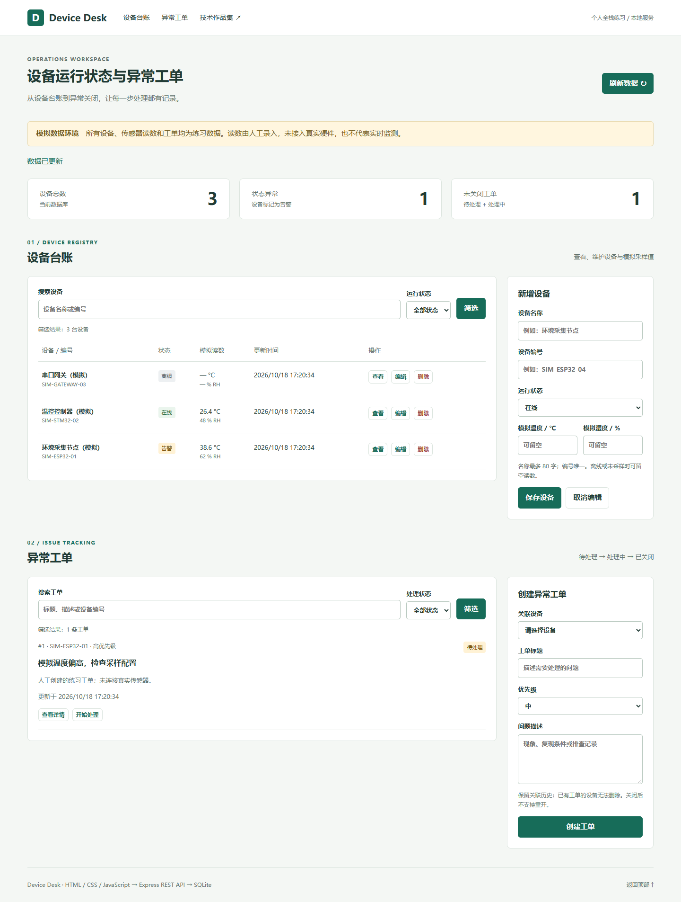
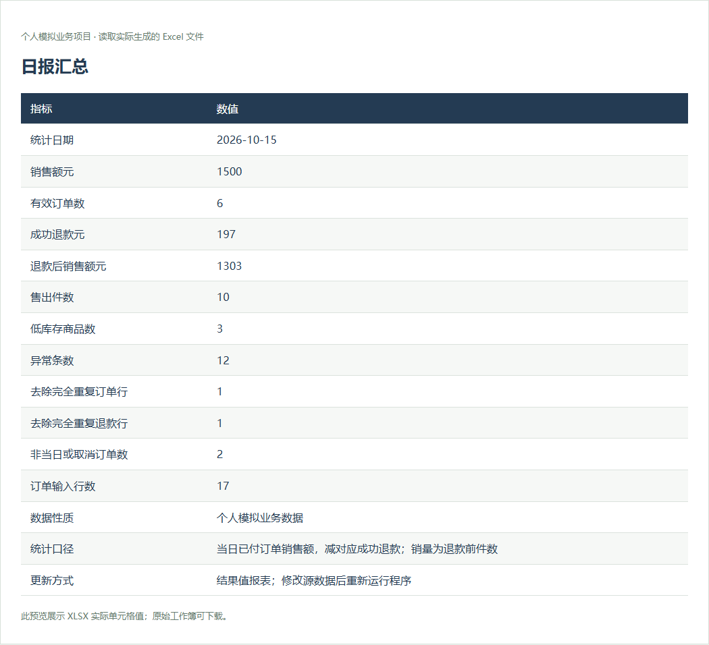
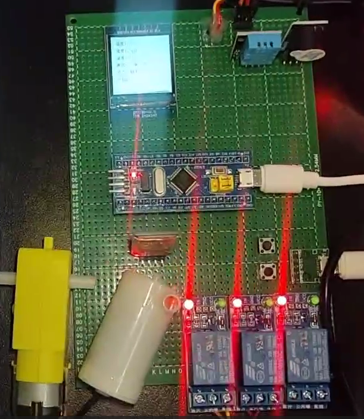

新增个人全栈练习 2026.10 / 本地运行
设备运行状态与异常工单管理平台
连接嵌入式背景与 Web 开发：维护设备台账、查看模拟读数，创建异常工单并跟踪到关闭。
HTML / CSS / JavaScript / Node.js / Express / SQLite
- 设备 CRUD、搜索筛选与双端校验
- 工单状态流转、外键约束与持久化
- 自动化 API 测试与实际浏览器验证
所有读数均为模拟数据；GitHub Pages 仅展示项目，后端按文档在本机启动。
李佳乐 / 电子信息硕士在读 / 上海
具备 C、Python 编程基础及 HTML/CSS/JavaScript 页面交互实践，做过嵌入式设备控制、传感器数据采集、数据处理和浏览器自动化项目。关注模块设计、数据交互、异常处理、测试验证与工程交付，希望在真实研发项目中持续提升前后端开发和系统集成能力。
可每周实习 5 天，持续 6 个月及以上

01 / 全栈工程实践
个人练习 · AI 辅助开发
真实 HTTP API 与 SQLite 持久化
新增个人全栈练习 2026.10 / 本地运行
连接嵌入式背景与 Web 开发：维护设备台账、查看模拟读数，创建异常工单并跟踪到关闭。
HTML / CSS / JavaScript / Node.js / Express / SQLite
所有读数均为模拟数据；GitHub Pages 仅展示项目，后端按文档在本机启动。
02 / 数据与自动化
两个新开发的个人模拟业务项目。
提供源码、真实运行截图与测试结果。


03 / 嵌入式与硬件
独立项目、毕业设计与团队项目。
分别说明个人职责及现有资料。

独立工程项目 2026.08—2026.09
传感器采集、屏幕显示与中断报警，连接 FreeRTOS 软件和 PCB 硬件实践。
ESP32 / FreeRTOS / GPIO / I2C / 嘉立创 EDA

本科毕业设计 · 独立完成 2024.09—2025.05
温度采集、PID 控制、电机与水泵驱动，以及本地显示和蓝牙交互。
STM32 / FreeRTOS / PID / PWM / 蓝牙 / 硬件调试

团队工程项目 2023.04—2023.10
树莓派车端与 STC 手持端协作；保留个人负责内容与团队研究边界。
树莓派 4B+ / STC / 蓝牙 / ZigBee / 软硬件联调
04 / 工程经历
将驱动调试、接口协作与测试经验延伸到软件研发。
2024.07—2025.06
嵌入式研发实习生
3.5 h → 1.2 h 为历史实习记录，本次未重新测量，不作为个人练习项目的性能指标。
05 / 技能与教育
区分已做过的实践与基础接触
不以百分比描述熟练程度
已有项目实践
C、Python 基础；pandas / openpyxl 数据校验与报表；Playwright 浏览器自动化。MATLAB 数据处理与仿真实践。
个人练习 · 已通过运行验证
HTML / CSS / JavaScript 页面交互；设备工单项目使用 Node.js、Express、SQLite 与 REST API。借助 AI 完成实现，持续学习设计与调试。
已有项目实践
Git 版本管理、模块与接口组织、日志分析、异常处理、pytest / Node 自动化测试与技术文档。
已有项目实践
STM32、ESP32、FreeRTOS、GPIO、PWM、ADC、EXTI、UART、I2C、SPI、1-Wire；Altium Designer、嘉立创 EDA、双层 PCB Layout 与贴片焊接。
已有项目实践
Keil MDK、ST-Link、示波器、逻辑分析仪、万用表、Wokwi；ADS、HFSS、Sonnet 电磁仿真。
基础接触 / 后续学习
C++、Linux 基础；继续学习后端服务组织、集成测试与部署流程。Go、Spring Boot、Vue、Docker 尚无本作品集中的项目验证。
电子信息 · 硕士在读
电子信息工程 · 本科
研究方向：高温超导微波器件与高频信号传输；ADS、HFSS、Sonnet 电磁仿真与 MATLAB 数据处理。
CET-4、计算机三级、普通话二乙；大学生数学竞赛校级一等奖、大学生科技创新大赛一等奖、校级三好学生及奖学金；合著导盲车论文 1 篇。
06 / 联系我
求职方向：全栈开发工程师助理 / 软件研发实习。
电子信息硕士在读 · 可每周实习 5 天，持续 6 个月及以上